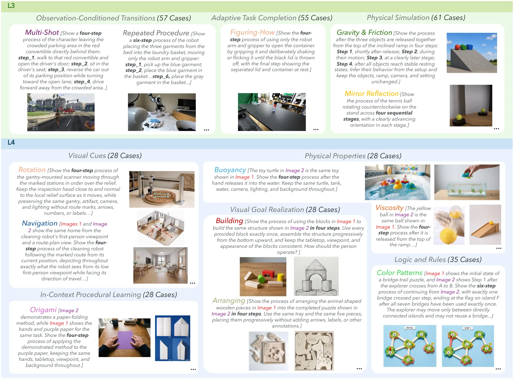
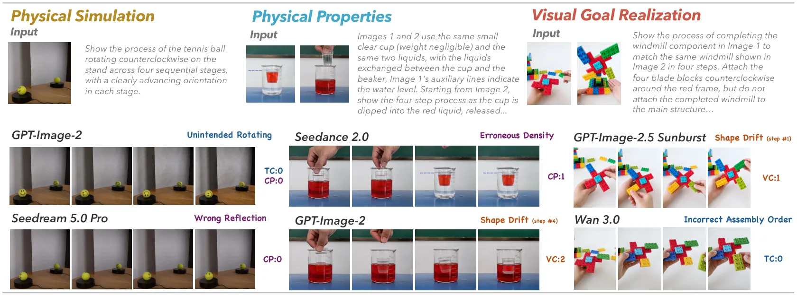
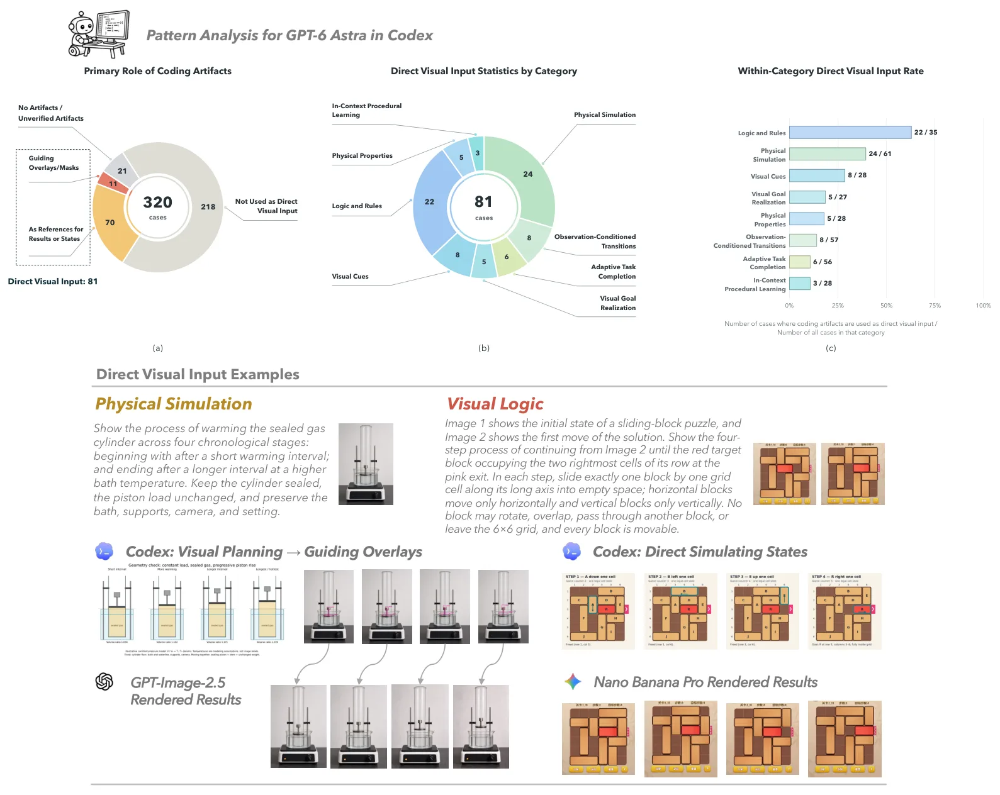
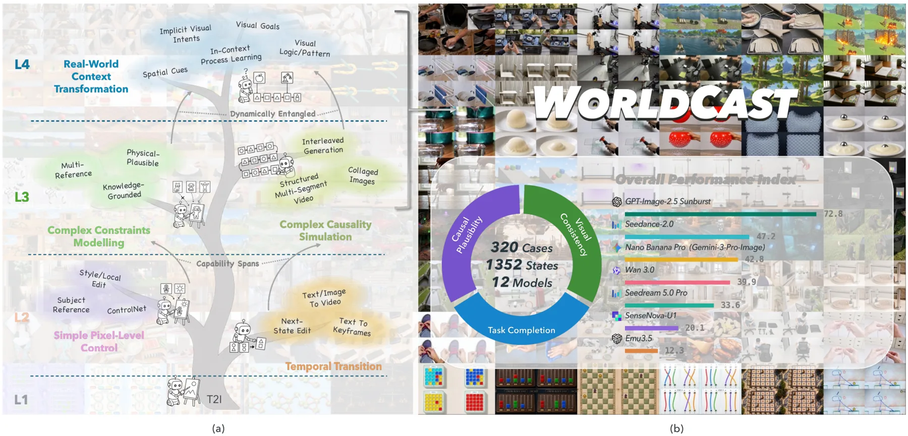
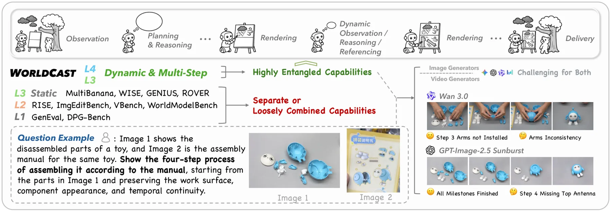
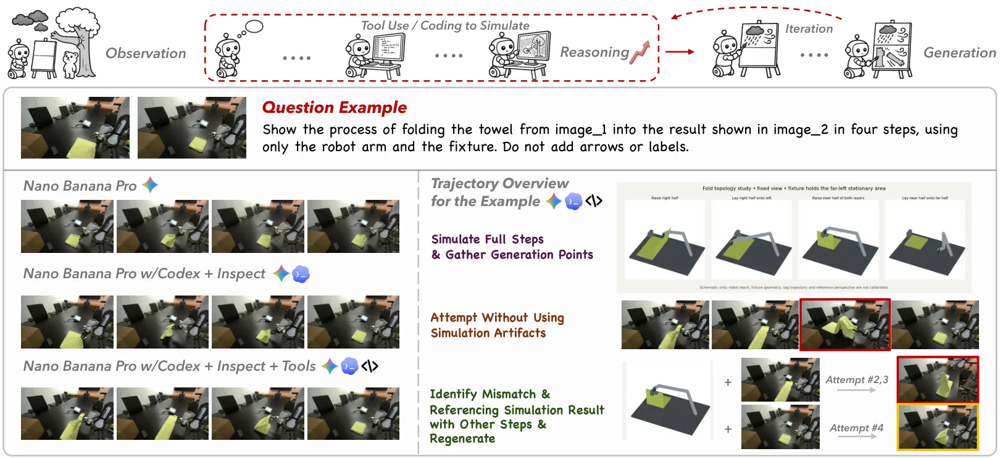

WorldCast：评测多步世界状态预测中的智能视觉生成
WorldCast: Exploring Intelligent Visual Generation in World State Prediction
把「智能视觉生成」分成 L1–L4 四级能力，聚焦 L3（观测条件化的状态转移）与 L4（物理性质、视觉线索、上下文程序学习、逻辑与规则、视觉目标实现）共八类，用 320 个手工案例评测 12 个图像/视频模型。评价采用三个维度——任务完成度（进度对齐 + 结果完成）、因果合理性、视觉一致性——由 GPT-5.5 作为 LMM 裁判，视频模型先经「智能体视频适配器」（GPT-6 Astra via Codex）转成有序关键帧。结果：GPT-Image-2.5 总分 72.8（L4 仍达 71.6，只比 L3 低 2.2），Nano Banana Pro 42.8，最好的开源模型 SenseNova-U1 仅 20.1（L3 24.4 → L4 15.0），纯生成的 Qwen-Image 最差。把交错生成改成单图网格会让 GPT-Image-2.5 掉 22.7 分（L4 逻辑与规则 74.3 → 23.0）；加入智能体式迭代优化可把 GPT-Image-2.5 从 72.8 提到 80.2，配合编码工具到 82.4。
overall score
best open-source score
grid vs interleaved drop
coding-harness score
作者、单位与技术谱系 · Research context
作者与单位
研究脉络
- 世界模型评测与「世界状态预测」能力分层上游工作关系：本文把已有的世界模型/生成模型评测推进到「多步状态预测」这一高层任务，并自建 L1–L4 能力层级来定位评测范围（本文聚焦 L3–L4）。[官方 HTML 全文（第 1–2 节）]
- 被测的前沿统一多模态系统（GPT-Image-2.5 Sunburst、Nano Banana Pro、Seedream 5.0 Pro 等）评测对象关系：第 4.1 节逐条列出被测模型与其配套语言模型（例如 GPT-Image-2 配 GPT-5.5、GPT-Image-2.5 配 GPT-6 Astra），并据此分析「增强器语言模型」对分数的贡献。[官方 HTML 全文（第 4.1、4.3.1 节）]
- Agentic 视觉生成与编码工具回路本篇推进（协议侧）关系：本文自建智能体视频适配器（GPT-6 Astra via Codex）与编码工具回路，用同一套协议同时评测图像与视频模型，并把「工具增强」量化为分数增益来源。[官方 HTML 全文（第 3、4.3.3 节）]
合作网络
- 七家机构的联合署名THU（清华） → Meituan LongCat、CUHK、PKU、MBZUAI、SJTU、HUST关系：共同署名（同篇论文内的多机构合作边）[官方 HTML 全文（首页机构列表）]
- 对第三方评测组件的技术依赖WorldCast 评测协议 → GPT-6 Astra（via Codex）与 GPT-5.5关系：明确技术依赖（评测链条中的第三方模型）[官方 HTML 全文（第 3 节、附录 D/E）]
- 评测对象的公开模型家族WorldCast 基准 → OpenAI、Google DeepMind、ByteDance Seed 等模型家族关系：评测对象（未公开代码依赖）[官方 HTML 全文（第 4.1 节）]
作者与机构来自论文首页的作者表、机构编号列表与贡献脚注（论文报告的事实）；由于官方 HTML 未提供逐位作者的机构编号映射，本页只记录机构清单与首位/末位作者，不作逐人归属断言（待核验）；lineage 中的「上游/对象/协议侧推进」定位来自第 1–4 节的表述（基于来源的解读）。
方法本质拆解 · What actually changed
是不是微调？——不训练任何生成模型，只做评测与适配
WorldCast 是纯评测基准：12 个被测模型全部保持原样，不做微调；论文新增的只是评测侧组件——智能体视频适配器（把视频转成有序关键帧）与 LMM 裁判（GPT-5.5）。实验中的「迭代优化」「编码工具」两种增强是推理时的外部工具调用，也不更新任何模型权重，因此表 1–3 的差异反映模型与推理协议，而不是训练带来的能力变化。
有没有额外约束？——统一输出协议 + 人类裁判提示 + 三层聚合权重
为让图像模型与视频模型可比，所有输出先被规范化成有序关键帧序列；评分固定为任务完成度（进度对齐 + 结果完成的加权，结果权重 0–0.5）、因果合理性与视觉一致性三维，先按 0–3 离散评分再线性聚合换算百分制。另有任务特定的「裁判提示」由人工标注，指出必须检查的关键物体、里程碑与确定性步骤，以抑制开放式案例中的判断漂移。约束作用在评分协议与提示上，而不改变被测模型的输入自由度。
推理/后端到底做了什么？——适配器抽帧 + 裁判打分 + 可选的工具回路
推理链是：被测模型按任务生成图像序列或视频；视频输出再经智能体视频适配器（GPT-6 Astra via Codex）按「包含性优先」原则选出覆盖关键状态的有序关键帧；随后 LMM 裁判在给定指令、多模态参照、裁判提示与有序输出的条件下评分。第 4.3.3 节进一步给出智能体式回路：语言模型先构造编码/仿真产物，检查生成序列、定位错误步骤并迭代修正，产物可以只作为提示引导而不直接进入生成器。这个过程不涉及对被测模型的训练或算法改动。
方法本质是什么？——把「世界状态预测能力」拆成里程碑可判定的三层评分
本质是把一个宽泛的「会不会预测世界变化」问题，转成在统一输出协议下按里程碑判定进度、结果、因果与视觉一致性的可复现评测，并用输出格式与工具回路两类对照分离能力与接口的影响。它改变了评测的组织方式，没有改变被测模型；明确没有做的是：没有把分数与下游决策效用建立联系，也没有消除评测链条中适配器与 LMM 裁判引入的模型依赖。
输入/先验 = 320 个手工案例的多模态上下文与参照 + 人工裁判提示 + 统一的关键帧输出协议；改变的位置 = 把世界状态预测能力按 L1–L4 分层、并把评分拆成任务完成度/因果合理性/视觉一致性三层里程碑判定；约束或合并动作 = 智能体视频适配器统一抽帧 + GPT-5.5 作 LMM 裁判 + 0–3 离散评分后聚合百分制，另设交错/网格与工具回路两类对照；直接效果 = GPT-Image-2.5 72.8 居首（L4 71.6），最好开源模型仅 20.1，改网格掉 22.7 分、加编码工具升至 82.4。

桥接价值Bridge
桥接价值
如果你的目标是判断「生成式世界模型能否作为决策或规划的依据」，本文提供了现成的分层问题集与两类关键对照：输出格式（交错生成 vs 单图网格）与迭代/工具增强。它的核心发现——画质与状态推进不是一回事、上下文累积会让弱模型明显衰减——与你评估长期一致性时关心的问题同构。可以直接借鉴的是「把任务分解成若干语义里程碑，再按里程碑是否被抵达来打分」的做法，用于你的建图/预测结果验收，而不必依赖端到端相似度。
方法与模块Method
方法摘要
数据：320 个手工设计案例、八个类别，覆盖 L3（观测条件化转移：物理仿真、自适应任务完成等）与 L4（物理性质、视觉线索、上下文程序学习、逻辑与规则、视觉目标实现）。指标：任务完成度是序列级进度对齐与结果级完成度的加权（结果权重 0–0.5），再加因果合理性与视觉一致性，三者在 0–3 离散评分上聚合后换算为百分制。评测协议：视频模型先经智能体视频适配器（GPT-6 Astra via Codex）抽取覆盖关键状态的有序关键帧，再与图像模型用同一套 LMM-as-a-Judge（GPT-5.5）评分，并配以人类标注的裁判提示以稳定开放式案例的判断。
可迁移模块
第一，可迁移「里程碑式评分」：把长任务拆成可判定的中间状态，分别判定是否抵达，比端到端相似度更能定位失败点——你对重建/预测结果做验收时也可以按里程碑而非整条轨迹打分。第二，可迁移「输出格式对照实验」：同一模型用交错生成与单图网格两种输出方式各跑一遍（本文差 22.7 分），用来区分「模型能力不足」与「接口/输出格式限制了表达」。第三，可迁移「上下文累积压力测试」：在 195 个四步案例上报告逐步准确率衰减，这个设计可以直接移植到你的长序列/多步预测评测，用来暴露随步数增长的性能退化。

证据Evidence
关键证据与数字
总分与分组（表 1，12 个模型）：GPT-Image-2.5 总分 72.8，在 L4 上仍达 71.6（只比 L3 低 2.2）；Nano Banana Pro 42.8，其视觉线索 33.7、逻辑与规则 41.4，均低于自身总分；最好的开源模型 SenseNova-U1 总分 20.1，从 L3 的 24.4 掉到 L4 的 15.0；纯生成模型 Qwen-Image 排名最末。类别弱点（第 4.2 节）：视觉目标实现是最弱类别之一，GPT-Image-2.5 为 61.3、Nano Banana Pro 仅 28.5；GPT-Image-2.5 在视觉线索 76.7、逻辑与规则 74.3 上显著领先。输出格式（表 2）：从交错生成改为单图网格使 GPT-Image-2.5 总分下降 22.7，其中 L4 逻辑与规则从 74.3 掉到 23.0。迭代与工具（表 3，以 GPT-6 Astra 作为语言模型）：智能体式迭代优化把 GPT-Image-2.5 从 72.8 提到 80.2、把配有 GPT-6 的 Nano Banana Pro 从 61.2 提到 72.5；编码工具进一步把最高总分推到 82.4，并在 L4 视觉目标实现（+20.0）与物理仿真（+19.0）上收益最大。上下文累积（第 4.3.2 节，195 个四步案例）：SenseNova-U1 从 42.6 掉到 27.2、Nano Banana Pro 从 67.7 掉到 48.7，而配 GPT-6 Astra 后首末步差从 82.6 缩到 76.4。
边界与下一步Limits & Next Step
边界与风险
第一，评分依赖 LMM 裁判（GPT-5.5）与人类提供的裁判提示，论文附录虽然做了裁判稳定性与人类胜负率相关性的检查，但这是生成式判分，对提示措辞敏感，跨版本可复现性需要额外核验。第二，视频模型要先经过智能体视频适配器抽取关键帧，这一预处理本身由大模型驱动（GPT-6 Astra via Codex），适配器的错误会被记到被测模型头上；论文用附录 4.4 做了有效性检查，但仍是链条上的一环。第三，仅 320 个案例、八类任务的采样不平衡，类别级结论的置信区间未在主表给出。第四，本文是能力评测而非方法论文，不提供任何提升机制，也没有把分数与下游任务效用（例如机器人决策质量）建立联系，因此不能据此推断「分数高就能用于决策」。
下一步实验
如果你要借用它的评测骨架，建议先做三项小改动再落地。(a) 把里程碑判定换成可执行检查（脚本/几何一致性），减少对 LMM 裁判的依赖，并保留 LMM 评分作为对照，量化两者分歧。(b) 做输出格式对照：同一条任务在「逐步交错」与「一次性网格」两种输出下各跑一遍，用来判断瓶颈在模型能力还是在接口。(c) 加一条上下文累积曲线：对同一个案例逐步拉长历史，记录每步准确率，把「随步数衰减」写成曲线而不是单点分数——这条对你的长序列建图/预测评测最有直接价值。若要把分数与决策挂钩，请再补一个下游任务（例如按预测状态规划一条路径）并报告端到端指标，而不是只看生成评分。







